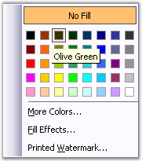

Background and Watermark classes represent the background effects in the Word document.
To set the background effects in Word, open the Format menu and click Background. The following are the background effects available in Word.
· Fill Color
· Fill Effects (Gradient, Texture, Pattern, Picture)
· Printed Watermark

Figure 27: Background and Watermark classes in the Word document
Note: A document can also have a printed watermark and background effect (fill color or one of fill effects) at the same time.
 Document Color
Document Color